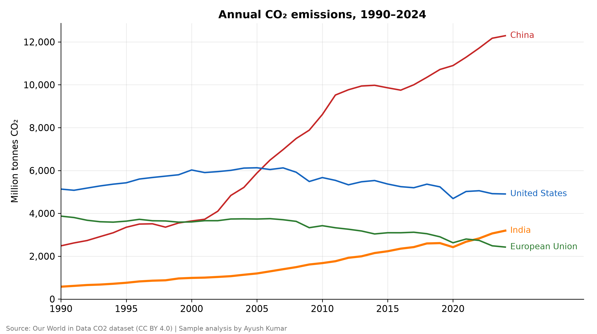
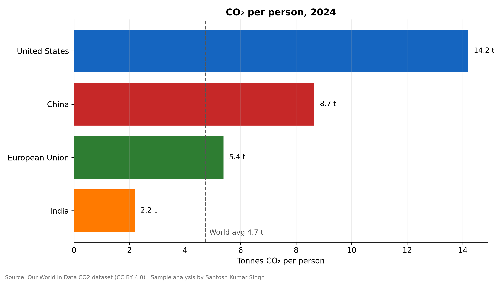
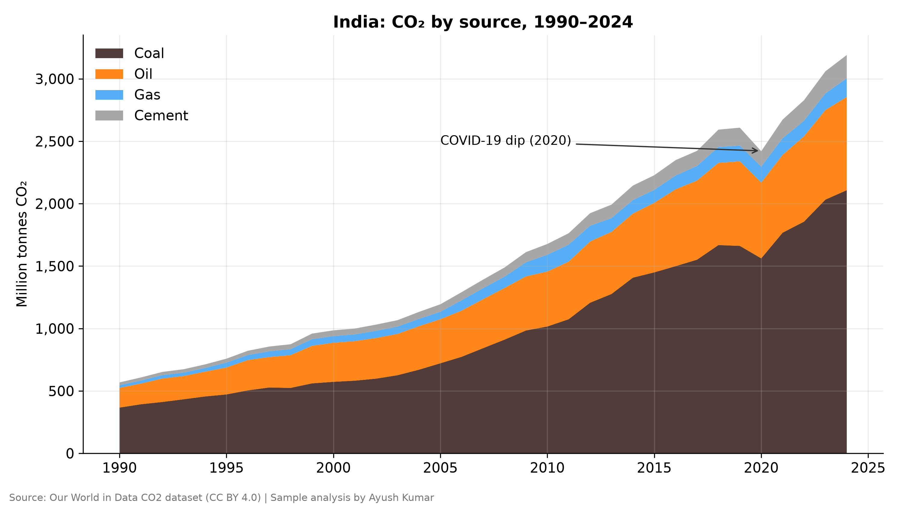

aayush.kumaar.011@gmail.com · X @inventor011 · YouTube @inventor0011
All projects below are sample / demo work made for this portfolio — public or synthetic data only, no client names or testimonials.
Rulebook-driven formulas tag every transaction (category, income/expense, matched keyword, review flag), auto-cover new rows and roll up into a summary. Download the sample .xlsx · README



Keeps page breaks, wraps, indentation and tables; tags bold/italic. Sample input PDF → output (Markdown tags) · output (HTML tags) · script